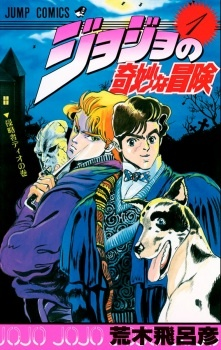

Тип: Манга
Тома: 5
Главы: 44
Статус: 1986-1987 г.г.
Жанры: Экшен Приключения Исторический Ужасы Сёнен Вампиры
По-японски: ジョジョの奇妙な冒険 ファントムブラッド
По-английски: JoJo's Bizarre Adventure Part 1: Phantom Blood

Призрачная кровь/Phantom Blood
Информация
Описание
Эта история берёт своё начало в XIX веке, рассказывая нам о двух сводных братьях — Джонатане Джостаре и Дио Брандо.Конец девятнадцатого века. Как это часто бывало, неосторожно завернув на повороте, повозка с молодой семьёй разбилась. Случайно оказавшийся там человек по имени Дарио Брандо, который не отличался хорошими манерами и представлениями о жизни, решил обокрасть похожего на аристократа пострадавшего. Но, к его сожалению, мужчина оказался жив. Поблагодарив Дарио за спасение жизни, сэр Джостар, как истинный джентльмен, пообещал не остаться в долгу.
Спустя двенадцать лет, умирая, Дарио через сына, что его ненавидел, передал Джостару письмо с просьбой приютить молодого отпрыска. После смерти отца Дио Брандо отправился в поместье, где он мгновенно испортил отношения с единственным сыном владельца дома, Джонатаном. Джо усердно старался выглядеть как джентльмен, но это ему плохо удавалось, а с появлением Дио его беззаботная жизнь и вовсе превратилась в кошмар.
Превратности судьбы нам неизвестны, но так ли просто столкнулись две противоположности? Какие сюрпризы ожидают молодых людей? И какова роль загадочной маски в этой авантюре?
Спустя двенадцать лет, умирая, Дарио через сына, что его ненавидел, передал Джостару письмо с просьбой приютить молодого отпрыска. После смерти отца Дио Брандо отправился в поместье, где он мгновенно испортил отношения с единственным сыном владельца дома, Джонатаном. Джо усердно старался выглядеть как джентльмен, но это ему плохо удавалось, а с появлением Дио его беззаботная жизнь и вовсе превратилась в кошмар.
Превратности судьбы нам неизвестны, но так ли просто столкнулись две противоположности? Какие сюрпризы ожидают молодых людей? И какова роль загадочной маски в этой авантюре?
Персонажи
Аниме
Читать